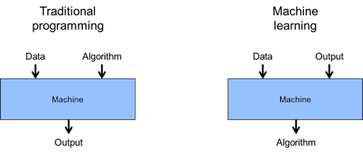

Machine Learning in Python using Clemson High Performance Computing#
Instructor: Carl Ehrett
Email: cehrett@clemson.edu
1. Welcome and Overview#
In this workshop, we will introduce the basics of machine learning using Python. We will focus on machine learning using “tabular data” (i.e. spreadsheet-style data), as opposed to images or unstructured text, though most of what we talk about will also apply to those domains. Image-related ML and generative AI both typically use deep learning neural networks which are not the focus of this workshop, but will be the focuses of other upcoming CCIT workshops. In this workshop, we will emphasize the use of Clemson’s Palmetto Cluster for running machine learning algorithms on large datasets. We will cover the following topics:
What is machine learning?
What are some of the python tools that facilitate machine learning?
What are the different types of machine learning?
What are some of the common machine learning algorithms?
How do we evaluate the performance of machine learning algorithms?
How do we explore and clean data?
How do we prepare data for machine learning?
How do we make use of Clemson’s Palmetto Cluster to efficiently run our machine learning code?
How can we run code that is too complex, or use data that is too large, for a Jupyter notebook?
What sorts of Palmetto resources should we request to allocate for our machine learning jobs?
1.1 Getting started#
You can download this notebook and its contents as follows.
In the terminal, run the following command: wget https://raw.githubusercontent.com/clemsonciti/rcde_workshops/master/python_sklearn/download.sh
This copies to your drivespace a script download.sh that, when run, will copy the full workshop files to your drivespace. So now that you have that script, run the command: bash download.sh. You should now have a folder, python_sklearn, which contains this notebook and the rest of the workshop.
You can run most of this notebook using the default kernel, though some of the code cells will only run if you have created an environment with specialized libraries installed.
1.2 What is machine learning?#
People use the term “machine learning” in a variety of ways. Some people use it more or less synonymously with “artificial intelligence.” And these days, AI does indeed usually work under the paradigm of machine learning. But “machine learning” refers to the use of algorithms to learn from data. The contrast here is with traditional programming, where a programmer writes code that tells the computer exactly what to do. In machine learning, the programmer writes code that tells the computer how to learn from data to make decisions.

2. Setting up the Environment#
2.1 Creating a Conda Environment#
Why we use conda for ML environments:
Simplified package management and dependency resolution
Easy creation and management of isolated environments
Cross-platform compatibility (Windows, macOS, Linux)
Support for multiple programming languages (not just Python)
Ability to specify and replicate exact environment configurations
Large repository of pre-built packages optimized for different systems
# Commands for creating and activating a conda environment
conda create -n hpc_ml -c rapidsai -c conda-forge -c nvidia cudf cuml numpy pandas scikit-learn matplotlib seaborn rapids jupyterlab python=3.11 'cuda-version>=12.0,<=12.5'
# Warning: the above command may take awhile! ~20 minutes. Next:
source activate hpc_ml
2.2 Registering as a jupyter kernel#
In addition to installing JupyterLab, we need to register our environment as a Jupyter kernel in order for it to show up as an option for us when running a notebook.
# Register the env as a kernel
python -m ipykernel install --user --name hpc_ml --display-name "HPC_ML"
3. Example end-to-end ML: Forest Covertypes Dataset#
First, we will use the Forest Covertypes dataset, which is a dataset that contains information about the forest cover type in the Roosevelt National Forest of northern Colorado. The dataset contains 581,012 samples and 54 features. The goal is to predict the forest cover type based on the cartographic features provided.
from utils import create_answer_box
create_answer_box("Please enter your name.", "00-01")
create_answer_box("Please enter your Clemson email address.", "00-02")
create_answer_box("Please briefly describe your level of experience with the Python programming language.", "00-03")
create_answer_box("Please briefly describe your level of experience with Palmetto. (Have you used Open OnDemand? Have you submitted batch jobs? Etc.", "00-04")
create_answer_box("Are there any particular areas of machine learning that you particularly hope to learn about today?", "00-05")
Please enter your name.
Please enter your Clemson email address.
Please briefly describe your level of experience with the Python programming language.
Please briefly describe your level of experience with Palmetto. (Have you used Open OnDemand? Have you submitted batch jobs? Etc.
Are there any particular areas of machine learning that you particularly hope to learn about today?
from sklearn.datasets import fetch_covtype
cov_type = fetch_covtype()
As we should always do with any dataset we’re working with, we should poke around it a bit to see what it looks like. It’s always good to know what is the datatype of the object we’re working with.
type(cov_type)
sklearn.utils._bunch.Bunch
In this case we’ve got a scikit-learn “Bunch” object. A quick google search shows us this page of documentation: sklearn.utils.Bunch Documentation, where we learn that a Bunch is a dictionary-like object that exposes keys as attributes. So, let’s see what keys are in this Bunch object.
cov_type.keys()
dict_keys(['data', 'target', 'frame', 'target_names', 'feature_names', 'DESCR'])
print(cov_type.DESCR)
.. _covtype_dataset:
Forest covertypes
-----------------
The samples in this dataset correspond to 30×30m patches of forest in the US,
collected for the task of predicting each patch's cover type,
i.e. the dominant species of tree.
There are seven covertypes, making this a multiclass classification problem.
Each sample has 54 features, described on the
`dataset's homepage <https://archive.ics.uci.edu/ml/datasets/Covertype>`__.
Some of the features are boolean indicators,
while others are discrete or continuous measurements.
**Data Set Characteristics:**
================= ============
Classes 7
Samples total 581012
Dimensionality 54
Features int
================= ============
:func:`sklearn.datasets.fetch_covtype` will load the covertype dataset;
it returns a dictionary-like 'Bunch' object
with the feature matrix in the ``data`` member
and the target values in ``target``. If optional argument 'as_frame' is
set to 'True', it will return ``data`` and ``target`` as pandas
data frame, and there will be an additional member ``frame`` as well.
The dataset will be downloaded from the web if necessary.
cov_type.data
array([[2.596e+03, 5.100e+01, 3.000e+00, ..., 0.000e+00, 0.000e+00,
0.000e+00],
[2.590e+03, 5.600e+01, 2.000e+00, ..., 0.000e+00, 0.000e+00,
0.000e+00],
[2.804e+03, 1.390e+02, 9.000e+00, ..., 0.000e+00, 0.000e+00,
0.000e+00],
...,
[2.386e+03, 1.590e+02, 1.700e+01, ..., 0.000e+00, 0.000e+00,
0.000e+00],
[2.384e+03, 1.700e+02, 1.500e+01, ..., 0.000e+00, 0.000e+00,
0.000e+00],
[2.383e+03, 1.650e+02, 1.300e+01, ..., 0.000e+00, 0.000e+00,
0.000e+00]])
cov_type.data.shape
(581012, 54)
cov_type.target
array([5, 5, 2, ..., 3, 3, 3], dtype=int32)
cov_type.target.shape
(581012,)
cov_type.frame
type(cov_type.frame)
NoneType
cov_type.target_names
['Cover_Type']
cov_type.feature_names
['Elevation',
'Aspect',
'Slope',
'Horizontal_Distance_To_Hydrology',
'Vertical_Distance_To_Hydrology',
'Horizontal_Distance_To_Roadways',
'Hillshade_9am',
'Hillshade_Noon',
'Hillshade_3pm',
'Horizontal_Distance_To_Fire_Points',
'Wilderness_Area_0',
'Wilderness_Area_1',
'Wilderness_Area_2',
'Wilderness_Area_3',
'Soil_Type_0',
'Soil_Type_1',
'Soil_Type_2',
'Soil_Type_3',
'Soil_Type_4',
'Soil_Type_5',
'Soil_Type_6',
'Soil_Type_7',
'Soil_Type_8',
'Soil_Type_9',
'Soil_Type_10',
'Soil_Type_11',
'Soil_Type_12',
'Soil_Type_13',
'Soil_Type_14',
'Soil_Type_15',
'Soil_Type_16',
'Soil_Type_17',
'Soil_Type_18',
'Soil_Type_19',
'Soil_Type_20',
'Soil_Type_21',
'Soil_Type_22',
'Soil_Type_23',
'Soil_Type_24',
'Soil_Type_25',
'Soil_Type_26',
'Soil_Type_27',
'Soil_Type_28',
'Soil_Type_29',
'Soil_Type_30',
'Soil_Type_31',
'Soil_Type_32',
'Soil_Type_33',
'Soil_Type_34',
'Soil_Type_35',
'Soil_Type_36',
'Soil_Type_37',
'Soil_Type_38',
'Soil_Type_39']
import pandas as pd
# Create a DataFrame using the feature names and data from cov_type
df_cov_type = pd.DataFrame(data=cov_type.data, columns=cov_type.feature_names)
# Display the first few rows of the DataFrame
print("First few rows of the Forest Covertypes Dataset:")
df_cov_type
First few rows of the Forest Covertypes Dataset:
| Elevation | Aspect | Slope | Horizontal_Distance_To_Hydrology | Vertical_Distance_To_Hydrology | Horizontal_Distance_To_Roadways | Hillshade_9am | Hillshade_Noon | Hillshade_3pm | Horizontal_Distance_To_Fire_Points | ... | Soil_Type_30 | Soil_Type_31 | Soil_Type_32 | Soil_Type_33 | Soil_Type_34 | Soil_Type_35 | Soil_Type_36 | Soil_Type_37 | Soil_Type_38 | Soil_Type_39 | |
|---|---|---|---|---|---|---|---|---|---|---|---|---|---|---|---|---|---|---|---|---|---|
| 0 | 2596.0 | 51.0 | 3.0 | 258.0 | 0.0 | 510.0 | 221.0 | 232.0 | 148.0 | 6279.0 | ... | 0.0 | 0.0 | 0.0 | 0.0 | 0.0 | 0.0 | 0.0 | 0.0 | 0.0 | 0.0 |
| 1 | 2590.0 | 56.0 | 2.0 | 212.0 | -6.0 | 390.0 | 220.0 | 235.0 | 151.0 | 6225.0 | ... | 0.0 | 0.0 | 0.0 | 0.0 | 0.0 | 0.0 | 0.0 | 0.0 | 0.0 | 0.0 |
| 2 | 2804.0 | 139.0 | 9.0 | 268.0 | 65.0 | 3180.0 | 234.0 | 238.0 | 135.0 | 6121.0 | ... | 0.0 | 0.0 | 0.0 | 0.0 | 0.0 | 0.0 | 0.0 | 0.0 | 0.0 | 0.0 |
| 3 | 2785.0 | 155.0 | 18.0 | 242.0 | 118.0 | 3090.0 | 238.0 | 238.0 | 122.0 | 6211.0 | ... | 0.0 | 0.0 | 0.0 | 0.0 | 0.0 | 0.0 | 0.0 | 0.0 | 0.0 | 0.0 |
| 4 | 2595.0 | 45.0 | 2.0 | 153.0 | -1.0 | 391.0 | 220.0 | 234.0 | 150.0 | 6172.0 | ... | 0.0 | 0.0 | 0.0 | 0.0 | 0.0 | 0.0 | 0.0 | 0.0 | 0.0 | 0.0 |
| ... | ... | ... | ... | ... | ... | ... | ... | ... | ... | ... | ... | ... | ... | ... | ... | ... | ... | ... | ... | ... | ... |
| 581007 | 2396.0 | 153.0 | 20.0 | 85.0 | 17.0 | 108.0 | 240.0 | 237.0 | 118.0 | 837.0 | ... | 0.0 | 0.0 | 0.0 | 0.0 | 0.0 | 0.0 | 0.0 | 0.0 | 0.0 | 0.0 |
| 581008 | 2391.0 | 152.0 | 19.0 | 67.0 | 12.0 | 95.0 | 240.0 | 237.0 | 119.0 | 845.0 | ... | 0.0 | 0.0 | 0.0 | 0.0 | 0.0 | 0.0 | 0.0 | 0.0 | 0.0 | 0.0 |
| 581009 | 2386.0 | 159.0 | 17.0 | 60.0 | 7.0 | 90.0 | 236.0 | 241.0 | 130.0 | 854.0 | ... | 0.0 | 0.0 | 0.0 | 0.0 | 0.0 | 0.0 | 0.0 | 0.0 | 0.0 | 0.0 |
| 581010 | 2384.0 | 170.0 | 15.0 | 60.0 | 5.0 | 90.0 | 230.0 | 245.0 | 143.0 | 864.0 | ... | 0.0 | 0.0 | 0.0 | 0.0 | 0.0 | 0.0 | 0.0 | 0.0 | 0.0 | 0.0 |
| 581011 | 2383.0 | 165.0 | 13.0 | 60.0 | 4.0 | 67.0 | 231.0 | 244.0 | 141.0 | 875.0 | ... | 0.0 | 0.0 | 0.0 | 0.0 | 0.0 | 0.0 | 0.0 | 0.0 | 0.0 | 0.0 |
581012 rows × 54 columns
df_cov_type[[col for col in df_cov_type.columns if 'Soil_Type' in col]].describe()
| Soil_Type_0 | Soil_Type_1 | Soil_Type_2 | Soil_Type_3 | Soil_Type_4 | Soil_Type_5 | Soil_Type_6 | Soil_Type_7 | Soil_Type_8 | Soil_Type_9 | ... | Soil_Type_30 | Soil_Type_31 | Soil_Type_32 | Soil_Type_33 | Soil_Type_34 | Soil_Type_35 | Soil_Type_36 | Soil_Type_37 | Soil_Type_38 | Soil_Type_39 | |
|---|---|---|---|---|---|---|---|---|---|---|---|---|---|---|---|---|---|---|---|---|---|
| count | 581012.000000 | 581012.000000 | 581012.000000 | 581012.000000 | 581012.000000 | 581012.000000 | 581012.000000 | 581012.000000 | 581012.000000 | 581012.000000 | ... | 581012.000000 | 581012.000000 | 581012.000000 | 581012.000000 | 581012.000000 | 581012.000000 | 581012.000000 | 581012.000000 | 581012.000000 | 581012.000000 |
| mean | 0.005217 | 0.012952 | 0.008301 | 0.021335 | 0.002749 | 0.011316 | 0.000181 | 0.000308 | 0.001974 | 0.056168 | ... | 0.044175 | 0.090392 | 0.077716 | 0.002773 | 0.003255 | 0.000205 | 0.000513 | 0.026803 | 0.023762 | 0.015060 |
| std | 0.072039 | 0.113066 | 0.090731 | 0.144499 | 0.052356 | 0.105775 | 0.013442 | 0.017550 | 0.044387 | 0.230245 | ... | 0.205483 | 0.286743 | 0.267725 | 0.052584 | 0.056957 | 0.014310 | 0.022641 | 0.161508 | 0.152307 | 0.121791 |
| min | 0.000000 | 0.000000 | 0.000000 | 0.000000 | 0.000000 | 0.000000 | 0.000000 | 0.000000 | 0.000000 | 0.000000 | ... | 0.000000 | 0.000000 | 0.000000 | 0.000000 | 0.000000 | 0.000000 | 0.000000 | 0.000000 | 0.000000 | 0.000000 |
| 25% | 0.000000 | 0.000000 | 0.000000 | 0.000000 | 0.000000 | 0.000000 | 0.000000 | 0.000000 | 0.000000 | 0.000000 | ... | 0.000000 | 0.000000 | 0.000000 | 0.000000 | 0.000000 | 0.000000 | 0.000000 | 0.000000 | 0.000000 | 0.000000 |
| 50% | 0.000000 | 0.000000 | 0.000000 | 0.000000 | 0.000000 | 0.000000 | 0.000000 | 0.000000 | 0.000000 | 0.000000 | ... | 0.000000 | 0.000000 | 0.000000 | 0.000000 | 0.000000 | 0.000000 | 0.000000 | 0.000000 | 0.000000 | 0.000000 |
| 75% | 0.000000 | 0.000000 | 0.000000 | 0.000000 | 0.000000 | 0.000000 | 0.000000 | 0.000000 | 0.000000 | 0.000000 | ... | 0.000000 | 0.000000 | 0.000000 | 0.000000 | 0.000000 | 0.000000 | 0.000000 | 0.000000 | 0.000000 | 0.000000 |
| max | 1.000000 | 1.000000 | 1.000000 | 1.000000 | 1.000000 | 1.000000 | 1.000000 | 1.000000 | 1.000000 | 1.000000 | ... | 1.000000 | 1.000000 | 1.000000 | 1.000000 | 1.000000 | 1.000000 | 1.000000 | 1.000000 | 1.000000 | 1.000000 |
8 rows × 40 columns
Let’s use the K-nearest neighbors algorithm to try to predict covertype using the information contained in the dataset.
# import libraries
from sklearn.model_selection import train_test_split
from sklearn.metrics import accuracy_score, classification_report
import numpy as np
from sklearn.neighbors import KNeighborsClassifier
# Split the data into features (X) and target (y)
X, y = cov_type.data, cov_type.target
# Print the shape of the data
print(f"Features shape: {X.shape}")
print(f"Target shape: {y.shape}")
print()
# Split the data into training and testing sets
X_train, X_test, y_train, y_test = train_test_split(X, y, test_size=0.2, random_state=355)
# Print the shapes of the training and testing sets
print(f"X_train shape: {X_train.shape}")
print(f"y_train shape: {y_train.shape}")
print(f"X_test shape: {X_test.shape}")
print(f"y_test shape: {y_test.shape}")
Features shape: (581012, 54)
Target shape: (581012,)
X_train shape: (464809, 54)
y_train shape: (464809,)
X_test shape: (116203, 54)
y_test shape: (116203,)
Now it’s time to train the model.
# Initialize and train the classifier
kn_classifier = KNeighborsClassifier(n_neighbors=5)
kn_classifier.fit(X_train, y_train)
KNeighborsClassifier()In a Jupyter environment, please rerun this cell to show the HTML representation or trust the notebook.
On GitHub, the HTML representation is unable to render, please try loading this page with nbviewer.org.
KNeighborsClassifier()
Now let’s see how the model performed.
import time
# Start a timer
start_time = time.time()
# Make predictions on the test set
y_pred = kn_classifier.predict(X_test)
# Calculate accuracy
accuracy = accuracy_score(y_test, y_pred)
# Print results
print(f"Accuracy: {accuracy:.2f}")
# Get unique class labels
unique_labels = np.unique(y)
target_names = [f"Class {label}" for label in unique_labels]
print("\nClassification Report:")
print(classification_report(y_test, y_pred, target_names=target_names))
# See how long that took
print(f"\nTotal time taken: {time.time() - start_time:.4f} seconds")
The above code works fine, but takes a long time to run! On the order of 5-10 minutes, depending on how fast your machine is. And that’s not even bad, as far as what machine learning requires.
Now let’s look at a version of the same machine learning approach that makes better use of the resources available to us – using both parallelization across cores and also using the GPU we’ve provisioned to speed things up.
First, we’ll load the data and prepare it for the KNN algorithm. If you get an error like OSError: libcudart.so: cannot open shared object file: No such file or directory, then you likely need to add cuda as a module loaded when launching your Open OnDemand session.
import cudf
from cuml import KNeighborsClassifier as cuKNN
from dask.distributed import Client, LocalCluster
# Initialize Dask client for distributed computing
n_workers = 4 # Adjust based on your available resources
cluster = LocalCluster(n_workers=n_workers)
client = Client(cluster)
# Convert data to cuDF DataFrames for GPU processing
X = cudf.DataFrame(cov_type.data, columns=cov_type.feature_names)
y = cudf.Series(cov_type.target)
# Split the data into training and testing sets
X_train, X_test, y_train, y_test = train_test_split(X, y, test_size=0.2, random_state=355)
Now we fit the KNN model.
# Initialize and train the classifier
kn_classifier_cuml = cuKNN(n_neighbors=5)
kn_classifier_cuml.fit(X_train, y_train)
KNeighborsClassifier()In a Jupyter environment, please rerun this cell to show the HTML representation or trust the notebook.
On GitHub, the HTML representation is unable to render, please try loading this page with nbviewer.org.
KNeighborsClassifier()
Now let’s see how this model performed.
# Start a timer
import time
start_time = time.time()
# Make predictions on the test set
y_pred = kn_classifier_cuml.predict(X_test)
# Calculate accuracy
accuracy = accuracy_score(y_test.to_cupy().get(), y_pred.to_cupy().get())
# Print results
print(f"Accuracy: {accuracy:.2f}")
# Convert predictions to numpy for classification report
y_test_np = y_test.to_numpy()
y_pred_np = y_pred.to_numpy()
# Get unique class labels
unique_labels = np.unique(y_test_np)
target_names = [f"Class {label}" for label in unique_labels]
print("\nClassification Report:")
print(classification_report(y_test_np, y_pred_np, target_names=target_names))
# Clean up
client.close()
cluster.close()
# See how long that took
print(f"\nTotal time taken: {time.time() - start_time:.4f} seconds")
Accuracy: 0.97
Classification Report:
precision recall f1-score support
Class 1 0.97 0.97 0.97 42502
Class 2 0.97 0.97 0.97 56531
Class 3 0.96 0.97 0.96 7132
Class 4 0.92 0.79 0.85 564
Class 5 0.93 0.89 0.91 1925
Class 6 0.94 0.93 0.94 3528
Class 7 0.97 0.97 0.97 4021
accuracy 0.97 116203
macro avg 0.95 0.93 0.94 116203
weighted avg 0.97 0.97 0.97 116203
Total time taken: 2.5994 seconds
Notice how much faster inference is in the second case! And this is just a simple case of getting predictions for 116k samples. Imagine if we needed to get predictions for millions of samples. In that case, the second approach would be much more feasible.
4. Hyperoptimization: search for the best version of the model to maximize performance#
In the above example, I used a KNN model with a k value of 5. But how do we know that k=5 is the best value? We don’t. We need to search for the best value of k. This is an example of hyperoptimization. You can think of hyperoptimization as a search for the best version of the model to maximize performance.
Hyperoptimization is inherently computationally expensive. It involves training many models with different hyperparameters and evaluating their performance. This is a perfect use case for the Palmetto 2 Cluster. We can use the cluster to train many models in parallel, which will speed up the hyperoptimization process. And if we submit our hyperoptimization job as a batch job, then we don’t need to tie up our local machine for hours – or days! – while the hyperoptimization process runs.
import cudf
import numpy as np
from cuml.neighbors import KNeighborsClassifier
from cuml.model_selection import train_test_split
from cuml.metrics import accuracy_score
# Convert data to cuDF DataFrames for GPU processing and ensure float32 dtype
X = cudf.DataFrame(cov_type.data, columns=cov_type.feature_names).astype('float32')
y = cudf.Series(cov_type.target)
# Split the data into training and testing sets
X_train, X_test, y_train, y_test = train_test_split(X, y, test_size=0.2, random_state=355)
# Define the parameter space for KNN
param_dist = {
'n_neighbors': np.arange(1, 21, dtype=int),
'p': [1, 2], # 1 for Manhattan distance, 2 for Euclidean distance
}
# Function to perform k-fold cross-validation with batched prediction
def cross_validate(X, y, model, n_splits=3, batch_size=10000):
fold_size = len(X) // n_splits
scores = []
for i in range(n_splits):
start = i * fold_size
end = (i + 1) * fold_size
X_val = X.iloc[start:end]
y_val = y.iloc[start:end]
X_train = cudf.concat([X.iloc[:start], X.iloc[end:]])
y_train = cudf.concat([y.iloc[:start], y.iloc[end:]])
model.fit(X_train, y_train)
# Batched prediction
y_pred = cudf.Series()
for j in range(0, len(X_val), batch_size):
X_batch = X_val.iloc[j:j+batch_size]
y_pred = cudf.concat([y_pred, model.predict(X_batch)])
score = accuracy_score(y_val, y_pred)
scores.append(score)
return np.mean(scores)
# Perform manual randomized search
n_iter = 10
best_score = 0
best_params = {}
for _ in range(n_iter):
params = {k: np.random.choice(v) for k, v in param_dist.items()}
knn = KNeighborsClassifier(metric='minkowski', **params)
score = cross_validate(X_train, y_train, knn)
if score > best_score:
best_score = score
best_params = params
print(f"Iteration {_+1}/{n_iter} - Score: {score:.4f} - Params: {params}")
print("Best parameters found:")
for param, value in best_params.items():
print(f"{param}: {value}")
# Train the best model on the full training set
best_knn = KNeighborsClassifier(**best_params)
best_knn.fit(X_train, y_train)
# Make predictions on the test set in batches
batch_size = 10000
y_pred = cudf.Series()
for i in range(0, len(X_test), batch_size):
X_batch = X_test.iloc[i:i+batch_size]
y_pred = cudf.concat([y_pred, best_knn.predict(X_batch)])
# Calculate accuracy
accuracy = accuracy_score(y_test, y_pred)
print(f"\nBest model accuracy: {accuracy:.4f}")
Iteration 1/10 - Score: 0.9374 - Params: {'n_neighbors': np.int64(15), 'p': np.int64(2)}
Iteration 2/10 - Score: 0.9274 - Params: {'n_neighbors': np.int64(20), 'p': np.int64(2)}
Iteration 3/10 - Score: 0.9337 - Params: {'n_neighbors': np.int64(17), 'p': np.int64(2)}
Iteration 4/10 - Score: 0.9569 - Params: {'n_neighbors': np.int64(4), 'p': np.int64(2)}
Iteration 5/10 - Score: 0.9581 - Params: {'n_neighbors': np.int64(7), 'p': np.int64(1)}
Iteration 6/10 - Score: 0.9298 - Params: {'n_neighbors': np.int64(19), 'p': np.int64(2)}
Iteration 7/10 - Score: 0.9548 - Params: {'n_neighbors': np.int64(8), 'p': np.int64(1)}
Iteration 8/10 - Score: 0.9569 - Params: {'n_neighbors': np.int64(4), 'p': np.int64(2)}
Iteration 9/10 - Score: 0.9633 - Params: {'n_neighbors': np.int64(3), 'p': np.int64(1)}
Iteration 10/10 - Score: 0.9406 - Params: {'n_neighbors': np.int64(17), 'p': np.int64(1)}
Best parameters found:
n_neighbors: 3
p: 1
Best model accuracy: 0.9696
# Save the best model
import pickle
with open("best_knn_model.pkl", "wb") as f:
pickle.dump(best_knn, f)
The above, being in a Jupyter notebook, is fine for something that only takes a few minutes. But if we want to e.g. try hundreds of different settings, or a model that takes longer to fit, we should make a script that we can submit as a SLURM job. We just need to copy our code into a .py file and make a SLURM script.
# This can be what we put in our .py file:
import cudf
import numpy as np
from cuml.neighbors import KNeighborsClassifier
from cuml.model_selection import train_test_split
from cuml.metrics import accuracy_score
from sklearn.datasets import fetch_covtype
import pickle
# Load the covertype dataset
cov_type = fetch_covtype()
# Convert data to cuDF DataFrames for GPU processing and ensure float32 dtype
X = cudf.DataFrame(cov_type.data, columns=cov_type.feature_names).astype('float32')
y = cudf.Series(cov_type.target)
# Split the data into training and testing sets
X_train, X_test, y_train, y_test = train_test_split(X, y, test_size=0.2, random_state=355)
# Define the parameter space for KNN
param_dist = {
'n_neighbors': np.arange(1, 21, dtype=int),
'p': [1, 2], # 1 for Manhattan distance, 2 for Euclidean distance
}
# Function to perform k-fold cross-validation with batched prediction
def cross_validate(X, y, model, n_splits=3, batch_size=10000):
fold_size = len(X) // n_splits
scores = []
for i in range(n_splits):
start = i * fold_size
end = (i + 1) * fold_size
X_val = X.iloc[start:end]
y_val = y.iloc[start:end]
X_train = cudf.concat([X.iloc[:start], X.iloc[end:]])
y_train = cudf.concat([y.iloc[:start], y.iloc[end:]])
model.fit(X_train, y_train)
# Batched prediction
y_pred = cudf.Series()
for j in range(0, len(X_val), batch_size):
X_batch = X_val.iloc[j:j+batch_size]
y_pred = cudf.concat([y_pred, model.predict(X_batch)])
score = accuracy_score(y_val, y_pred)
scores.append(score)
return np.mean(scores)
# Perform manual randomized search
n_iter = 10
best_score = 0
best_params = {}
for _ in range(n_iter):
params = {k: np.random.choice(v) for k, v in param_dist.items()}
knn = KNeighborsClassifier(metric='minkowski', **params)
score = cross_validate(X_train, y_train, knn)
if score > best_score:
best_score = score
best_params = params
print(f"Iteration {_+1}/{n_iter} - Score: {score:.4f} - Params: {params}")
print("Best parameters found:")
for param, value in best_params.items():
print(f"{param}: {value}")
# Train the best model on the full training set
best_knn = KNeighborsClassifier(**best_params)
best_knn.fit(X_train, y_train)
# Make predictions on the test set in batches
batch_size = 10000
y_pred = cudf.Series()
for i in range(0, len(X_test), batch_size):
X_batch = X_test.iloc[i:i+batch_size]
y_pred = cudf.concat([y_pred, best_knn.predict(X_batch)])
# Calculate accuracy
accuracy = accuracy_score(y_test, y_pred)
print(f"\nBest model accuracy: {accuracy:.4f}")
# Save the best model
with open("best_knn_model.pkl", "wb") as f:
pickle.dump(best_knn, f)
And our SLURM script (saved in a separate file, e.g. hyperparam_opt.sh) can be:
#!/bin/bash
#SBATCH --job-name=hyperparam_opt
#SBATCH --nodes=1
#SBATCH --ntasks-per-node=4
#SBATCH --time=16:00:00
#SBATCH --gres=gpu:v100:1
#SBATCH --output=hyperparam_opt_%j.out
# Load the modules we need
module load anaconda3
module load cuda
# Activate the environment we created to work in
source activate MLWorkshop
# Change to the directory where the .py script is
cd /home/[username]/dir/where/the/py/script/is/
# And run the script!
python hyperparameter_optimization.py
Then we can submit the job with sbatch hyperparam_opt.sh, on the command line.
create_answer_box("The `cross_validate` function defined above internally splits the data into a set used to train the data, and a separate \"validation\" set on which accuracy is evaluated. We already have a test set -- why is a separate validation set necessary? Why not just use our test set when checking the accuracy of each model fit?", "00-06")